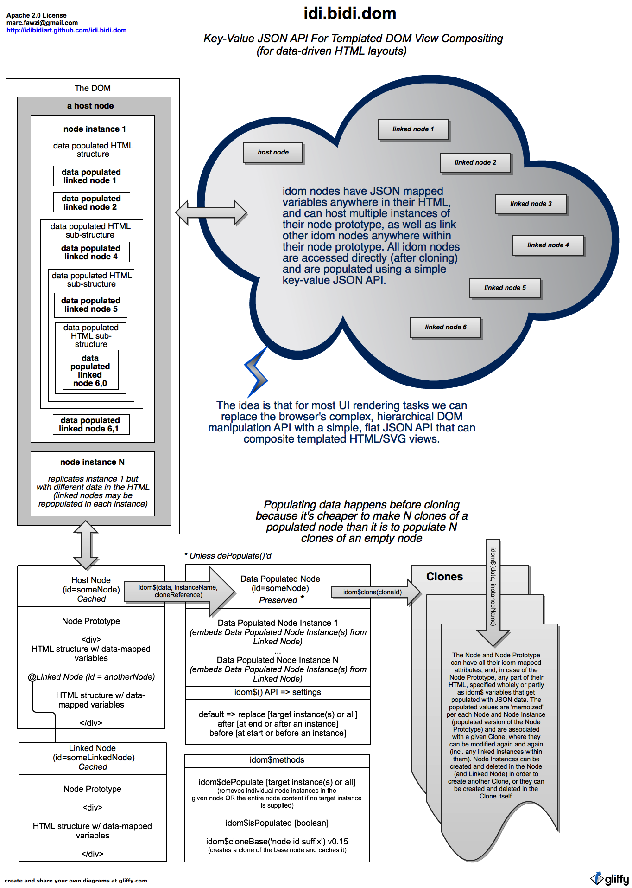

/*! idi.bidi.dom * * v0.3 * * New Way To Interact With The DOM * * Copyright (c) Marc Fawzi 2012 * * http://javacrypt.wordpress.com * * Apache License 2.0 * * derived from NattyJS v0.08: a BSD licensed precursor by the same author * */
 /****************************************************************************** * * README: * * This version works in Gecko and Webkit, not tested on IE * * idi.bidi.dom - Anti-Templating Framework For Javascript -- offering a radically * new way for interfacing to The DOM. In abstract terms, idi.bidi.dom takes the DOM * and adds variables, variable memoization, encapsulation, multiple-inheritance and * type polymorphism (with the Node Prototype as the user defined type) In logical * terms, idi.bidi.dom offers a list-wise API without losing the ability to build and * directly access predetermined nested structures. * * Why use it? * * idi.bidi.dom reduces HTML on a page to a minimum and places a simple and consistent * JSON API between presentation logic and the DOM * * How does it work? * * idi.bidi.dom allows the DOM to be decomposed into Node Lists each having a * Node Prototype from which instances (copies, usually with different data) can * be created, populated with JSON data and then inserted into the Node (in append, * prepend, and replace modes, with the ability to target specific, previously * inserted instances of the Node Prototype or the Node List's entire content, i.e. * the set of instances of the Node Prototype) and where the Node itself can be * dynamically linked into other Nodes. * * Additionally, idi.bidi.dom allows the cloning of each Node and the populated * instances of the Node Prototype within it (including any Linked Nodes inserted * into the Node Prototype and the populated instances of the Node Prototype within * those Linked Nodes) This means that we may re-use the same Node to create any number * of differently populated and customized Nodes, thus reducing the amount of HTML * in our pages while greatly simplifying our interaction with the DOM by using * a list-oriented DOM API instead of the much more complex/error-prone hierarchical * API that the DOM exposes. * * Unlike other template-less DOM rendering frameworks, idi.bidi.dom does not attempt * to take the place of Javascript itself nor does it add its own boilerplate; it * simply gives Javascript more power by leveraging a simple and consistent interface * to the DOM. * * Usage: * * format: document.querySelector('#someNode').idom$(cloneId, data [, settings]) * * output: creates a new instance of Node Prototype using 'data' (json) to populate the * special variables in the Node, then append/prepend to (or replace) existing * instance(s) of Node Prototype in the Node * * cloneId: unique id for the future or current clone the data is intended for * * data: {key: value, key: value, key: value, etc} * where the key must match the variable name in the data minus the idom$ prefix * * settings: {mode: 'replace'|'append'|'prepend', targetInstanceId: value, instanceId: value} * * if there no populated instances of Node Prototype then append/prepend/replace * will create a new instance of the Node Prototype (so if a targetInstanceId is supplied in * this case it will throw an error, so call .$isPopulated() first to be sure before * invoking this method with targetInstanceId, unless you know the node is populated) * * targetInstanceId: (1) idom-instance-id value for the instance of the Node Prototype to * insert _at_ when in append and prepend modes. If null, append/prepend at last/first * previously populated instance of the Node Prototype, or to start of the list if none were * previously populated. * * targetInstanceId: (2) dom-instance-id value for instance(s) of the Node Protoype to replace * when in replace mode. If null, replace all instances. * * instanceId: idom-instance-id value for instance of Prototype Node being populated. * ********************************************************************************* * * Other available are methods are * * .idom$dePopulate([settings]) which can delete certain populated instances of the Node * Prototype or all populated instances * * .idom$isPopulated() may be queried before specifying targetInstanceId * to verify existence of populated instance(s) of Node Prototype (the targets) * * idom$clone may be used to clone an entire node (including any linked nodes) after it's * been populated) * ********************************************************************************** * * About Events: * If the handler is defined on the node it will only have access to the node id. If it's defined on or in the * node prototype it will have access to the instance id * * The context of 'this' inside the handler becomes the element the event is defined on (i.e. the cloned node * or the node prototype instance within it), which is the normal way 'this' is handled in this context * * event handlers that are not defined using element attributes (e.g. onclick, onmouseover, etc) are not handled * by idom at this time. Finding and cloning all event handlers that are attached via different means, like jQuery, * will be supported in the future * *********************************************************************************/
Example:<!--************************************************* INTERFACE OBJECT ***********************************************--> <script type="text/javascript" src="jsonData.js"></script><!--************************************************* VIEW OBJECTS ***************************************************--> <!-- Start of Node List --> <div idom-node-id='teamContainer' style='float: left; width: 200px; height: 400px; padding: 20px; margin: 20px; border-radius: 10px; border: none; background-color: gray; color: black; display: none;'> <!-- Start of Node Prototype --> <div> <div style='padding: 5px;'>idom$caption</div> <!-- @idom userInfo --> </div> <!-- End of Node Prototype --> </div> <!-- End of Node List --> <!-- Start of Node List --> <div idom-node-id='userInfo' style='display: none;'> <!-- Start of Node Prototype --> <div class='classNameCanBEaVariableToo'> <table cellspacing="20px"> <tr> <td> <div onclick='idom$someHandler' style='background-color: idom$itemColor; border-radius: 5px; padding: 5px'>idom$username</div> </td> <td> <div onclick='idom$myHandler' style='background-color: idom$itemColor; border-radius: 5px; padding: 5px'>idom$id</div> </td> </tr> </table> </div> <!-- End of Node Prototype --> </div> <!-- End of Node List --><p>Click on any user below to see the idom-attached event handler for the target element in action</p> <div> <button onclick='button1()'>Click to disable event handling on user 2 in Team 2</button> <button onclick='button2()'>Click to enable event handling on user 2 in Team 2</button> </div> <script> /*********************************************** PRESENTER *************************************************************/ //cache DOM elements with idom-node-id (i.e. all node prototypes) and supply values for init() variables (i$var) if any idom.init(); for (m = 0; m < jsonData.teams.length; m++) { //populate the Node Prototype of the Linked Node first //and populate again each time before making a new clone that links it for (n = 0; n < jsonData.teams[m].members.length; n++) { document.querySelector('[idom-node-id=userInfo]').idom$('clone' + Number(m + 1), { username: jsonData.teams[m].members[n].username, id: jsonData.teams[m].members[n].id, // we can have as many event handlers on or within a node but here we're just using the same one on two elements myHandler: 'idom.eventHandler(event, this, changeColor)' // event handler can be removed by simply setting someHandler to null }, { mode: 'append', instanceId: 'user' + n }) } // perform replace on the host Node (linked node gets re/linked with each idom$() call) // and populate again each time before making a new clone of it document.querySelector('[idom-node-id=teamContainer]').idom$('clone' + Number(m + 1), { caption: jsonData.teams[m].caption }, { mode: 'replace', instanceId: 'team' + Number(m + 1) }) // at this point the teamContainer div is populated with the 'caption' data and the content of the linked userInfo node // so we may now clone it and provide a uid for the clone (e.g. 'clone1') var clonedEl = document.querySelector('[idom-node-id=teamContainer]').idom$clone('clone' + Number(m + 1)) //insert cloned node into body document.body.appendChild(clonedEl); // normally, we'd dePopulate the host node (so we're startig with its node prototype for the next iteration) // but in this case the host node's node prototype instance is being replaced each time (mode: 'replace') so no need // document.querySelector('[idom-node-id=teamContainer]').idom$dePopulate() // now that we have everything in the cloned node, dePopulate the linked node so we're startig with its node prototype for // the next iteration) document.querySelector('[idom-node-id=userInfo]').idom$dePopulate() // now we can display the cloned node and the linked node within it (also cloned) both having been tagged during // cloning with the clone uid at end of their idom-node-id's idom.forEachExec(document.querySelectorAll("[idom-node-id$='clone" + Number(m + 1) + "']"), "style.display = 'block'") } var toggleColor = {}; // the event handler is defined here on each instance of the node prototype of the linked node that's now inside // the cloned node, but it can also be defined anywhere within any node (and anywhere within any linked nodes within // it) // About Events: // If the handler is defined on the node it will only have access to the node id. If it's defined on or in the // node prototype it will have access to the instance id // The context of 'this' inside the handler becomes the element the event is defined on (i.e. the cloned node // or the node prototype instance within it), which is the normal way 'this' is handled in this context // event handlers that are not defined using element attributes (e.g. onclick, onmouseover, etc) are not handled // by idom at this time. Finding and cloning all event handlers that are attached via different means, like jQuery, // will be supported in the future function changeColor(event, nodeId, instanceId, cloneId) { event.preventDefault(); toggleColor[instanceId] = !toggleColor[instanceId]; if (toggleColor[instanceId]) { // notice that we're only supplying the new/changed data (the delta not the whole set) for the idom$ variables // in the node prototype. The idom$ variable values are persisted in an internal hashmap per each instance document.querySelector('[idom-node-id="' + nodeId + '"]').idom$(cloneId, { itemColor: colorSelector(instanceId) }, { instanceId: instanceId, mode: 'replace', targetInstanceId: instanceId }) } else { document.querySelector('[idom-node-id="' + nodeId + '"]').idom$(cloneId, { itemColor: 'transparent' }, { instanceId: instanceId, mode: 'replace', targetInstanceId: instanceId }) } } function button1() { // directly accessing the linked node inside the cloned node (the linked can be nested anywhere in the // node prototype instance of the original node the clone is copied from) document.querySelector('[idom-node-id="userInfo@linked@team2@cloned@clone2"]').idom$('clone2', { someHandler: "" //null value removes the handler }, { instanceId: "user1@linked@team2@cloned@clone2", mode: "replace", targetInstanceId: "user1@linked@team2@cloned@clone2" } ) } function button2() { // directly accessing the linked node inside the cloned node (the linked can be nested anywhere in the // node prototype instance of the original node the clone is copied from) document.querySelector('[idom-node-id="userInfo@linked@team2@cloned@clone2"]').idom$('clone2', { someHandler: "idom.eventHandler(event, this, changeColor)" }, { instanceId: "user1@linked@team2@cloned@clone2", mode: "replace", targetInstanceId: "user1@linked@team2@cloned@clone2" } ) } function colorSelector(instanceId) { var item = idom.baseSelector(instanceId) switch(item) { case 'user0': return 'lightblue'; case 'user1': return 'orange' case 'user2': return 'yellow' default: return 'white' } }
Click on any user below to see the idom-attached event handler for the target element in action